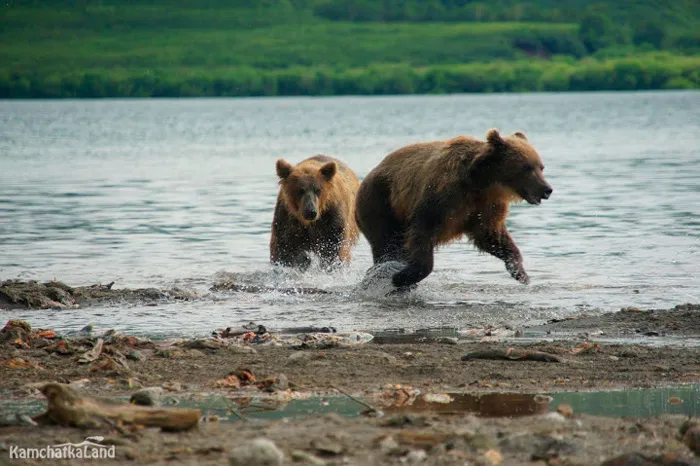

Камчатка — это настоящий природный рай, где вулканы, бурные реки и чистейшие озера сосуществуют в гармонии.
Здешние пейзажи поражают своим разнообразием: от снежных вершин вулканов до густых лесов, полных жизни.
Фауна Камчатки уникальна: здесь обитают многочисленные виды медведей, морских животных и редких птиц.
Например, бурые медведи могут достигать веса до 700 кг и являются важной частью экосистемы, играя роль хищников.

Водные ресурсы Камчатки настолько чисты, что многие реки и озера заросли кристально чистой водой.
Рыбалка здесь — одно из любимых занятий местных жителей и туристов, особенно ловля лосося, который возвращается в родные реки для нереста.
Камчатка славится своими гейзерами и термальными источниками, которые создают неповторимые ландшафты.
Долина гейзеров, включенная в Список Всемирного наследия ЮНЕСКО, является абсолютно уникальным явлением природы.
Экологическое состояние Камчатки поддерживается благодаря минимальному вмешательству человека.
Однако быстрое развитие туризма и небольшие, но активные углеводородные разработки требуют бережного отношения к этому уникальному региону.